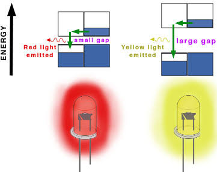

Electroluminescence (LEDs)
An LED bulb emits light when an electric current flows through its semiconductor p-n junction. Electrons from the n-type region and holes from the p-type region violently recombine at the junction, releasing energy as photons in a process known as electroluminescence. This is highly efficient and generates minimal heat.
The resulting color of the LED depends entirely on the energy bandgap of the semiconductor material, which dictates the energy frequency of the released photons. Specific colors are achieved by modifying the bandgap via doping.
| Material | Typical Light Emitted |
|---|
| Gallium Arsenide Phosphide (GaAsP) | Red, orange, or yellow |
| Gallium Phosphide (GaP) | Green or yellow |
| Indium Gallium Nitride (InGaN) | Blue, green, and ultraviolet |
| Gallium Nitride (GaN) | Blue or ultraviolet |

Phase Changing Materials (PCM) for Data Storage
Optical media like Blu-ray discs utilize Phase Changing Materials (PCM) to physically store data. A common material used is Germanium antimony telluride (Ge8Sb2Te11). This material dynamically shifts between a crystalline state and an amorphous state when hit by a laser.
- Write Phase: A high-power laser hits the material, turning specific regions into an amorphous state (which has low reflectivity). These dark spots represent binary data.
- Erase Phase: An intermediate-power laser reheats the material, recrystallizing the regions back into a crystalline state (which has high reflectivity).
- Read Phase: A low-power laser scans the track. A photodiode reads the bouncing reflections off the crystalline and amorphous regions, interpreting the 1s and 0s.
Practice Exercises
Test your knowledge on LEDs and Phase Change Materials.
1. What physical process inside an LED releases energy as a photon of light?
A) The melting of a tungsten filament
B) Electrons and holes recombining at the p-n junction
C) Magnetic induction forcing electrons to vibrate
2. What property of a semiconductor directly dictates the color of light emitted by an LED?
A) Its physical thickness
B) Its energy bandgap
C) Its thermal conductivity
3. In a Blu-ray disc, what phase transition does the writing media undergo to store data?
A) From a crystalline phase to an amorphous phase
B) From a solid phase to a liquid phase
C) From a magnetic phase to a non-magnetic phase
4. During the "Write" phase on a Blu-ray disc, a high-power laser creates amorphous regions. What is the optical property of these regions?
A) They possess low reflectivity
B) They become completely transparent
C) They possess exceptionally high reflectivity
5. What kind of laser is used to "Read" the data off a Blu-ray disc without altering the PCM layer?
A) High-power laser
B) Intermediate-power laser
C) Low-power laser